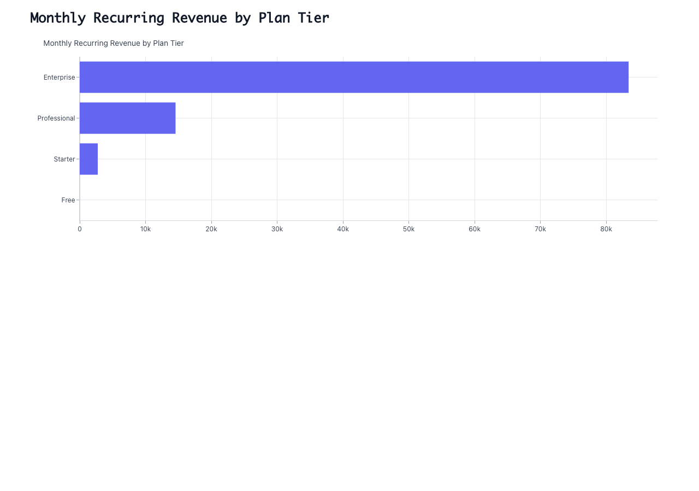
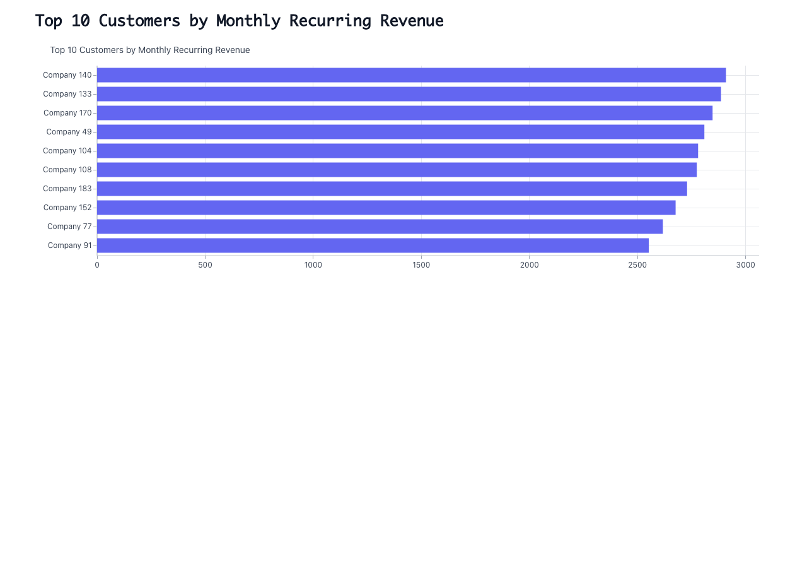

Snowflake SaaS Data Source
1. MRR Trend
QA PASSED
Prompt: Create an area chart showing total MRR by month from the subscriptions table. Only include active subscriptions (where churn_date is null). Show the trend over the full date range.

2. Customer Growth
QA PASSED
Prompt: Create a line chart showing the count of new customer signups by month using the signup_date from the customers table.

3. Revenue by Plan
QA PASSED
Prompt: Create a horizontal bar chart showing total MRR by plan tier from active subscriptions. Order from highest to lowest revenue.

4. Revenue by Industry
QA PASSED
Prompt: Create a horizontal bar chart showing total MRR by customer industry. Join subscriptions with customers to get industry. Only include active subscriptions.

5. Top Customers
QA FAILED
Prompt: Create a horizontal bar chart showing the top 10 customers by MRR. Display the company name and their MRR amount from active subscriptions.

QA Issues Found:
- Missing MRR amount values - the chart shows bars but no numerical values are displayed, which was specifically requested in the original ask
- No axis labels or scale indicators to show what the MRR amounts actually are
6. Churn Analysis
QA PASSED
Prompt: Create a line chart showing the count of churned customers by month using the churn_date from the subscriptions table.